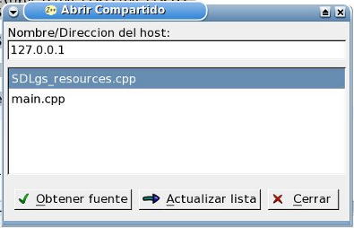

Diálogo Abrir Compartido

Este cuadro de diálogo copiar el contenido de un archivo que otro usuario está compartiendo a travez de una red interna (LAN). Un usuario debe utilizar el diálogo Compartir Fuente para poner el contenido del archivo a disposición de los demás, y estos debe utilizar este díalogo para copiar este contenido a sus entornos.
Lo primero que debe hacer el usuario es identificar la pc que tiene el archivo que desea descargar y obtener la lista de archivos compartidos de la misma. Para ello debe introducir el nombre de host o su dirección IP en el cuadro de texto "Nombre/Direccion del Host" y hacer click sobre el botón "Actualizar Lista". Si el host no se encuentra, ZinjaI informará mediante un mensaje alusivo. En caso contrario, la lista se irá llenando a medida que el Host envía los datos de la misma. Notar que si cierra y abre nuevamente el diálogo, este mostrará nuevamente la misma lista, sin actualizar.
Una vez actualizada la lista debe seleccionar el archivo que desee de la misma y hacer click en el botón "Obtener fuente". El diálogo se cerrará y cuando finalice la transferencia (en una LAN debería ser practicamente instantáneo) se abrirá una nueva pestaña en el área de código para el mismo.
Nota: El nombre de equipo puede no funcionar cuando se intercambian fuentes entre diferentes sistemas operativos. En estos casos utilice el número de IP de la PC en cuestión. En Linux, si Samba se encuentra instalado, puede utilizar el comando "nmblookup <nombre>" para obtener dicho número a partir del nombre de host de Windows.